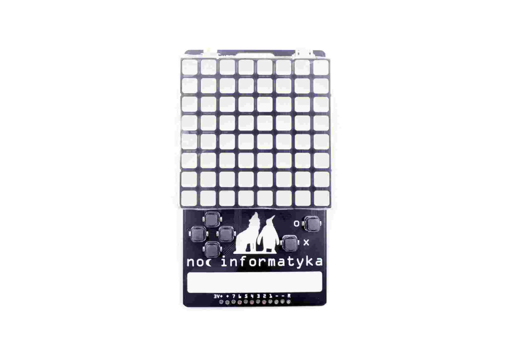

Noc Informatyka¶
Published on 2019-09-27 in PewPew Standalone.
This is another secret project that I can now write about. At the EuroPython I have been approached by the organizers of a Polish event Noc Informatyka ( https://nocinformatyka.pl ) and asked to prepare badges for the event. I agreed, and we produced 150 custom units.
Electrically it’s identical to the PewPew Standalone, including the voltage regulator that is optional for Standalone, but included by default here. Mechanically, I used the same large LED matrix as in the EuroPython PewPews, but this time with a vertical arrangement of the device and with quiet silicone buttons, same as used in µGame . The connector header has been moved to the bottom, to make room for the lanyard hanger, and there is a place for writing the participant’s name. The battery holder for two AAA batteries is on the back, which is otherwise empty.
The units were produced and tested by @Makerfabs , and it all went very smooth.
I can’t wait to see what the participants of the event will do with them!